Thank you for purchasing our theme. In case of any questions or doubts, do not hesitate to contact us via our Support Forum: https://customerpanel.me/support-forums/. We will do our best to solve any problem concerning the project. At the same time we invite you to visit often our profile on ThemeForest since there will be appearing the improvements of our project and the newest actualizations.
Getting started(HOW TO DO IT?)
You have probably seen our demo page and this is why you baught this theme. To see most of this things in your page you will have to provide proper content for it, and here we will guide you how to achieve this.
Inserting images in theme
Every time you upload some image in settings(for logo, background) or in post/pages/albums if you want to use exactly same image as uploaded, then use Full Size option(screen shot). Other options will be available depending on image size you have just uploaded.
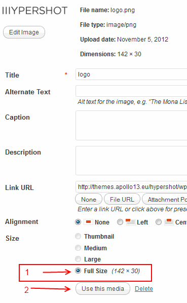
My front page is empty or gives error message.
If you see empty front page after theme installation or message "Apologies, but no results were found for the requested archive. " it means you have to add some content or change front page to display something else.
Since version 1.3 we have removed compressed scripts and styles. This were very good things if you won't make any changes in theme. In other case it was counter intuitive, when editing for example style.css made no changes in site.
We decided that such behaviour(compressing CSS & JS) should be user choice made by installing plugin.
If you choose any plugin for that please test it with theme before trusting it completely:-)
Are there any recommendations of plugins from us? Not yet. We have tested some plugins and none is good enough in our opinion, as many just to do too much. We are waiting for your opinions in that field:-)
Since version 1.2 we have changed back end media selector to one intrduced in Wordpress 3.5. You can now use it for works, galleries or for adding logo.
To use you will have to provide twitter account info as explained in plugin instructions.
Installation & Update
Install
To install theme you can:
Upload it via FTP(safer)
Download ZIP file from ThemeForest and find in it beach_apollo.zip(theme file)
Unpack files from beach_apollo.zip. You should now have directory beach_apollo and in it other directories and files like 404.php, home.php, index.php etc.
upload whole beach_apollo folder to /wp-content/themes/ in your WordPress installation
login to admin panel in WordPress, and go to Appearance->Themes and click Activate below Beach Please theme
Upload it via admin panel(can get error while upload on slower connections)
Download ZIP file from ThemeForest and find in it beach_apollo.zip(theme file)
go to Appearance->Themes->Install Themes(Tab)->Upload and choose file beach_apollo.zip
go to Appearance->Themes and click "Activate" below Beach Please theme
After that you will see new menu named BP Apollo13 theme and that is where all fun begins :-) Also you will see My Works and Galleries menus. We will write about it later.
After installation
Set permalinks
It is good practice to set permalinks for your blog. Go to Settings->Permalinks and set anything other then default seetings.
Next you should choose menu to use in theme. It is very simple. Go to Appearance->Menus, create some menu(even with one position) and select available menu in Theme locations-> Site Navigation. Read more about creating WordPress menu.
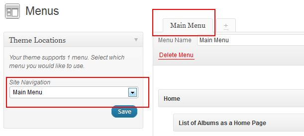
If you want to add Single Work/Gallery to menu you have to dig in WordPress hidden options;-). Just look at image below and enable them
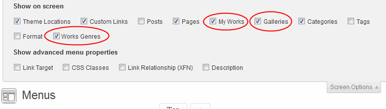
Next you should scan through Theme options to set everything you need.
Update theme
As this theme is commercial one, for now we don't provide auto update option for theme, as this will lead to easily stealing our work. In future this may change, but for now updates are only available on ThemeForest in place where you have downloaded your first version of theme:-) Although WordPress will inform you about new version of theme, but you still will have to go to ThemeForest site.
When you got zip file with theme, best way to update theme is to use plugin such as http://wordpress.org/extend/plugins/easy-theme-and-plugin-upgrades/. If you have problems with updating theme from Wordpress admin panel, you can also manually delete theme via FTP and upload new version. You wont loose your theme settings.
If you have made some changes in theme files you will have to manually update to keep your changes.
Remember to always backup your data before update!(or cry if you didn't and something went totally wrong)
Use of Easy Theme and Plugin Upgrades
Upgrading a Theme(copied form plugin page)
Download the latest zip file for your theme.
Log into your WordPress site.
Go to Appearance > Themes.
Click the "Install Themes" tab.
Click the Upload link below the main page tabs.
Select the zip file with the new theme version to install.
Select "Yes" from the "Upgrade existing theme?" option.
Click "Install Now".
Installing Demo data
Demo data
If you really need to see your new site as our demo page, then this is section for you. This is why we provide sample data, if you like to see how it is all made from backend in admin page. If you are confused about options in theme, we advise to use it only to see how things are made. After that, you should clean your WordPress so you don't have any unwanted content ;-)
How to install sample data:
Locate the sample_data.xml file in data folder in file downloaded form ThemeForest
Open Tools->Import menu and choose WordPress option(Installation may be needed first).
Upload sample_data.xml file.
On next page you should check Download and import file attachments
But it would be simple if this will end here :-) Import will probably fail(cause of timeout while downloading images), so you will have to repeat above steps few times, till you get success message. After this fallow next steps:
Go to Settings->Reading->Front page displays and do this
Go to BP Apollo13 theme->Main settings->What to show on front page? set to Works list
Go to Appearance->Menus->Theme locations-> Site Navigation select available menu(adding menu).
You may need to clean menu listed on the right couse it may have 'doubles' due to many import atempts.
Widgets will be totaly no good, so go to Appearance->Widgets and make some cleaning and inserting.
Last thing we have to create user.css file from default settings. To do that, we have to edit any setting of theme. Go to BP Apollo13 theme->Appearance->Main appearance settings->Background color and set to any color. But for real, you can change any option of theme to recreate user.css file.
Theme should look good enough now.
Main Settings menu
If you wish to use theme default value for each option(it may sometimes be different frome theme initial value) just delete whole text in input from this option.
What to show on front page?
Here you set what you wish to see on frontpage. You can choose from:
page - static page added in Pages menu,
post list(blog) - it is default WordPress front page,
works list - list of all works(you can also add it as seperate page),
galleries list - list of all galleries(you can also add it as seperate page),
single gallery
Revolution slider
For proper work of theme you should define front-page and blog page:
Go to Settings->Reading->A static page
as Front page set some empty page you created in Pages menu, for example you can name it "Frontpage"
as Posts page use another empty page named for exapmle "Blog".
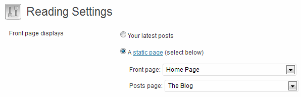
Select gallery to use as front page
If as front page you choose gallery then here you can select which one should be displayed.
Layout texts
You have there texts that you can fill or not: Under logo text, Footer text, and Copyright text
Contact form settings
Give e-mail address for contact page form or left empty to use admin e-mail.
Google Analytics
Code for statistics from google. It should be full code like this:
<script type="text/javascript">
var _gaq = _gaq || [];
_gaq.push(['_setAccount', 'UA-0000000-11']);
_gaq.push(['_trackPageview']);
(function() {
var ga = document.createElement('script'); ga.type = 'text/javascript'; ga.async = true;
ga.src = ('https:' == document.location.protocol ? 'https://ssl' : 'http://www') + '.google-analytics.com/ga.js';
var s = document.getElementsByTagName('script')[0]; s.parentNode.insertBefore(ga, s);
})();
</script>
Appearance menu
If you wish to use theme default value for each option(it may sometimes be different frome theme initial value) just delete whole text in input from this option. Leaving some options empty may give odd results, so always check your changes.
Here you have few sections with few settings in each. Lets check them out:
Main appearance settings
Favicon upload here image that will be visible as icon of our site. We provide default one and you can use it:-)
Next there options(Custom background image, How to fit background image and Background color) is to set global background that can be visible on all pages, galleries, works list and single work. It can be overwritten in each of those types. sets color for ale titles on page(post title, sidebar titles, etc.) and also color for Titles when they are links. Headings/Titles color hover works only on links. You can also choose font-weight and text-transform for titles.
Links color and hover color set colors of links on whole page(without title links and few exceptions).
Customize Logo
Here you upload logo for your blog or use text one. Uploaded logo will be resized by CSS to fit layout. Specially to cover devices with HIGH DPI screens(like RETINA) we added option High DPI logo size in %. Now read carefully ;-)
By default there is 180px wide space for logo. If you upload logo that is bigger then that about ~40% or more(250px wide) then you can set this option(High DPI logo size in %) to 100% and everything will look good and sharp. If you upload smaller logo then you will have to set this to some smaller value, 75% should good in most cases.
To be precise: this setting will shrink to XX% of your original logo on High DPI devices, but thanks to this it will look sharp.
Here is table of values for uploaded logo:
Image width
Suggested setting value
> 250px
95% - 100%
200px - 250px
80% - 95%
150px - 200px
65% - 80%
< 150px
50% - 65%
For really small logos this setting may have no effect, but you can always type in input smaller number then 50%.
Static pages
Here you can set global options for static pages like page layout and content color. Both settings can be overridden in each page.
Customize header and footer
Here you can set background color of header& footer, colors and sizes of texts and links in that area, also various seetings about main menu and switch on serach form.
You can also select color scheme for this area which will be base for any customization you will select next.
If you don't use icons for menu then it would be good to switch off Menu icons option to save some bandwidth.
Custom CSS
Here you can add changes to main CSS. Often if you will ask on forum for tweaks you will have to insert them in here:-)
Blog & Archives menu
Main settings
First explenation of few single options:
Type of post excerpts - Setting manual or automatic excerpts for posts. You can read more here. Automatic excerpts will not format post. It means all shortcodes and link will be displayed as raw text. Best to test it by yourself.
Masonry brick width/margin - here you set dimension and margin of bricks. It is only base width, as brick will stretch up to 120% of width to fill up free space.
Author info in post - will display box about author under post content. Info about each author can be set in Users menu.
Background color under post list - obvious;-)
Now we will describe options that are common for blog list and each post(but can be set separately)
Blog/Archive/Post sidebar - Blog and archive setting is connected. Each post can overwrite this setting. Sidebar will not show up if Blog sidebar don't have any widgets.
Display post Media - should featured image/video be displayed
Post meta: Date - should date of post be displayed
Post meta: Author - should author of post be displayed
Post meta: Comments number - should link to comments of post be displayed
Post meta: Tags - should tags of post be displayed
Post meta: Categories - should categories of post be displayed
Fonts menu
If you wish to use theme default value for each option(it may sometimes be different frome theme initial value) just delete whole text in input from this option. Leaving some options empty may give odd results, so always check your changes.
Here you can choose font for your page. You can set font for 3 main layout elements:
Content - text in posts/pages, and other places with lot of text.
Titles
Interactive elements - top menu, labels, etc.
If you choose classic font then remember that this setting depends on fonts installed on client device.
If you choose google font then remember to choose needed variants and subsets. For preview, google font is loaded with variants regular and 700, and all available subsets. You have to select what subset of chars do you need for your language, and also what styles you wish to use.
For example, fonts for titles should always be selected with bold style(600 or 700), unless it is set different, cause in other case, browser will try to emulate bold face of font, and it might look strange. Same with font for content, you should choose font that have bold, italic and maybe italic bold style.
On other hand if some varaint will not be used in your page you shouldn't select it, cause it will only make loading of your page slower. Same go for subsets.
If you will write mainly in english then you should be good with almost any font. If your language has some different chars you should always test your selected font. For that you can double click sample text in above font selecting, write your special chars, and double click again to check if font will render them correctly. Unfortunately for preview we load google font with all available subsets, so to know which subsets you have to check in font selection, you will have to test it live.
It is good practice to not use too many different fonts, and also to select some classic font for content.
Works menu
Albums list page settings
If you set Permalinks then you should follow this rule about Works list page slug.
Most important thing is to don't create page with same slug as set in Work slug name, or u may see weird and not happy things. You have to set some slug, dont't leave it empty.
Best to just leave it as default.
You can also deactivate comments, and disable display of subtitles and genres.
Works list page settings
Works main page - Select page that is your Works list page. It will make working some features. If you setup Work list as your front page then you don't have to set any page here.
Cover width/height/margin - Here you set diemnsions of bricks. They are mainly fluid, as bricks will try to take full width of avaliable content, so they will strech up to 120% of bricks width you will set here. If you set brick height to 0, images will not be cropped, and will behave more like puzzles.
Single work appearance(Scroller)
Here you setup height of all scrollers used in works.
Single work appearance(Slider)
You set here height, interval and transitions speed for all works sliders. You can also decide should titles and list of slides be visible. Autoplay, Transition type and Random slide order can be set in each work.
Galleries Menu
Gallery appearance(Bricks theme)
Brick width/height/margin - Here you set diemnsions of bricks. They are mainly fluid, as bricks will try to take full width of avaliable content, so they will strech up to 120% of bricks width you will set here. If you set brick height to 0, images will not be cropped, and will behave more like puzzles.
Gallery appearance(Slider theme)
You set here height, interval and transitions speed for all galleries sliders. You can also decide should titles and list of slides be visible. Autoplay, Transition type and Random slide order can be set in each gallery.
Social menu
Here you provide links to social profiles you have. Nothing new :-) You can also set icons set(circle/diamond white,black or color)
You can drag & drop social items to set them in order you wish to see on your page.
Only filled inputs will activate each social icon. Not filled = not shown :-)
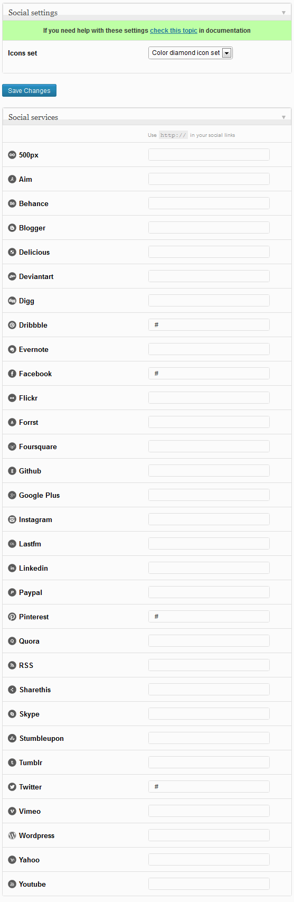
Contact page menu
Here are special settings for contact page. You can setup here google map that will be visible in background of contact page.
Google map drop area
If you paste here link from google maps, then all setting of map will be tuned right away. Just:
Background map - You can decide to switch map on or off
Latitude, Longitude - Use format Latitude, Longitude (ex. 50.854817, 20.644566)
Map type, zoom level - initial look of map
Marker title and Info window content - here you can add some information about the place that marker is pointing out.
Advance menu
Comments validation
If you want to use some plugin to validate forms in theme, then you should probably turn off theme validation.
Theme validation works in comments form and in theme contact form.
Theme lightbox
If you wish to use some other plugin/script for images and items switch it off.
Use compressed JS & CSS
By default theme uses compressed files so it speeds up loading time of your page. If you need to edit theme in CSS or JS you will have to turn off this options. It will make theme load normal files like style.css instead of compressed.css.
After edit you can make again compressed files by using online compressor like www.refresh-sf.com/yui/
Shortcodes
In theme we use shortcodes editor. You can see it below:
post editor
page editor
work editor
Use it to insert predefined elements for your content. To see available shortcodes in theme check http://themes.apollo13.eu/bp/shortcodes/ and select shortcode category from submenu.
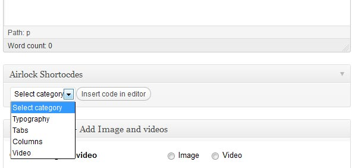
You can also use WordPress embeds. Just select emebeds from shortcode menu, and insert your link for embed.
Widgets
In Appearance->widgets menu you will see set of widgets. To use it just drag and drop them to sidebar you would like to see them. Available sidebars:
Blog sidebar - Widgets from this sidebar will appear on blog, single post, search results, archive page and 404 error page.
Available widgets:
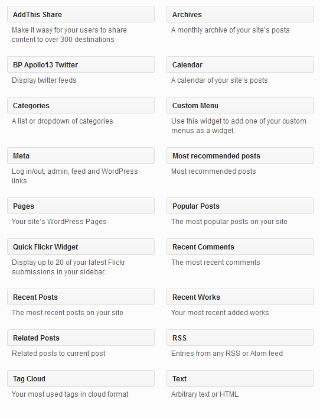
Filckr widget
To use Filckr widget styled as in our theme you will have to install plugin Quick Flickr Widget.
Adding Frontpage
To make frontpage and Blog work as it should you have to follow this steps:
Go to your WordPress Pages->Add new
Add new page named Frontpage and another named Blog. You can leave them empty.
Go to Settings->Reading->Front page displays
Choose "A static page (select below)"
In Front page: choose Frontpage
In Posts page: choose Blog
Save changes.
You are done :-)
Now if you want to add Blog as separate page just go to Appearance->Menus and add selected Blog page to menu.
Since version 1.1 you can add Revolution slider as front page. If you aren't familiar with this plugin please check its documentation
If you wish to add this slider as front page you have two options in our theme:
Select it from BP Apollo13 theme->Main settings->What to show on front page-> Selected Revolution Slider and then select it from Select Revolution Slider to use as front page
In same settings select Page and then in this Page you wish to use, select template Page with slider(see image below). In this template every revo slider will be stretched to full width of page area(no padding like rest of content). You should insert it as shortocode into content of page(ex. [rev_slider sliderSrider])
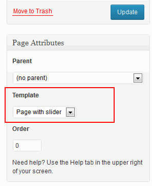
When you use Revoultion Slider with our theme best would be to use its option, as it is most responsive.
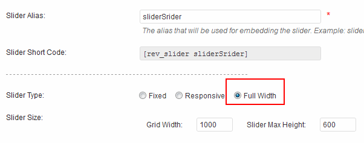
Adding New Posts/Pages
Pages has almost same options so this description will fit them too
Adding posts is same as always in WordPress, but with few tweaks. Firstly you can use shortcodes editor. Secondly you use Featured image or Video/Audio to represent post.
For image and video you can also select how it should be stretched or aligned and how big it should appear(medium, big or original).
Also you can choose to use full width content by turning off Sidebar.
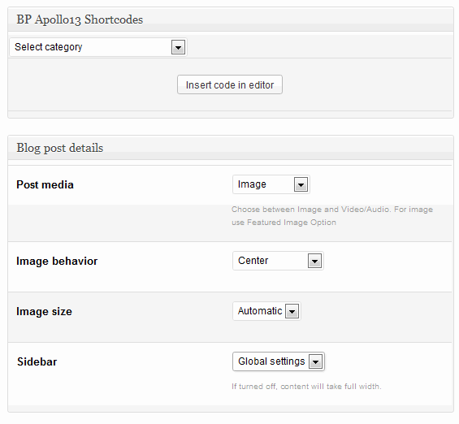
Pages
For pages you have few other options. You can also use shortcodes editor and have same options(like in posts) for featured image/video. Pages don't have sidebar , but instead you can setup different page layout(left, right, center, full width) and one of predefined content colors(light or dark).
There is also two options for apperance in menu. They will work only for first level items in menu. Menu short description will show up under name of page in menu. Menu icon - You can see available icons at Font Awesome. You have to use code of icon that looks like icon-medkit. To add more icons separate them with white space.
Last thing is setting backgorund image. Kind of connected with this is option Show "hiding cross" - if set to automatic it will show up cross if there is setup some background image or color(probably most of time).
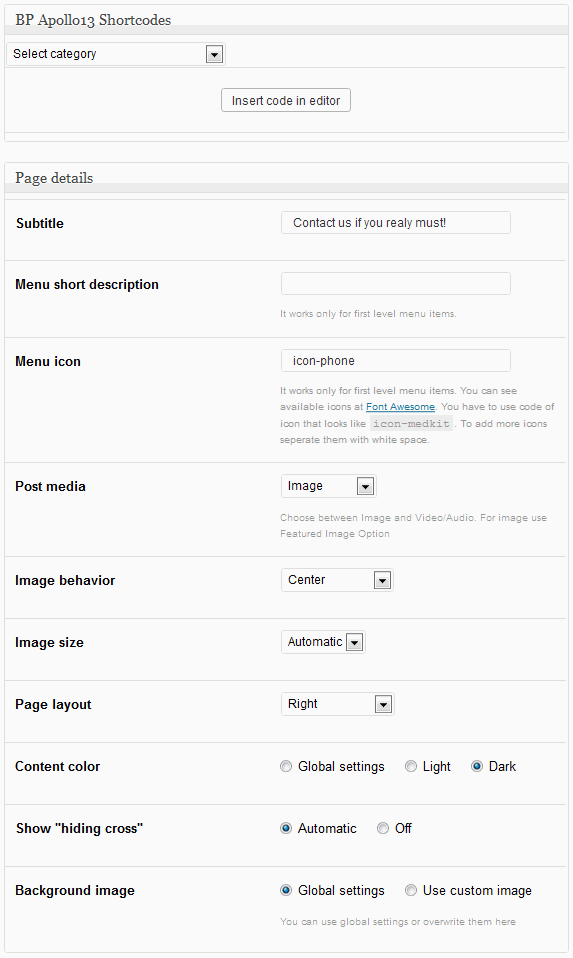
Posts list / blog
If in Blog & Archives menu Type of post excerpts is set to Auto, then If while writing posts you won't use more tag then theme will use excerpt feature. Excerpt are made automatically, but you can also specify what will be displayed. Just find Excerpt box, and type text you wish Read more.
If you won't give excerpt either, then post will be cut after first 30 words.
Adding Works
Before you start anything below, it is good to visit Works menu
Adding Works list
To add Works list to your site first you need to create Works list page:
Add new page(Pages->Add new)
Name it as you wish but keep in mind that if you use nice addresses (eg. yourblog.com/about-me ) than slug of your page have to be different then slug for portfolio setted in Works menu, so everything will work correct. Best name this page as"Works".
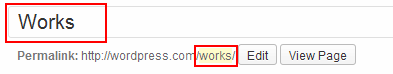
From template list choose Works list.
Publish Page.
Done
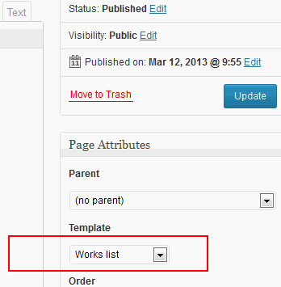
If you wish to use front page as Works list then settings for Works list page you will find in page you defined as front page in here.
Add new work
Adding new work is pretty easy. First you should set title and Featured image as it is cover of your work which is visible on Works list page.
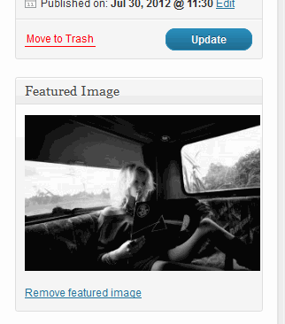
Next you can fill description about this work by using main editor and shortcodes under it. You have to set some settings also, lets check image below.
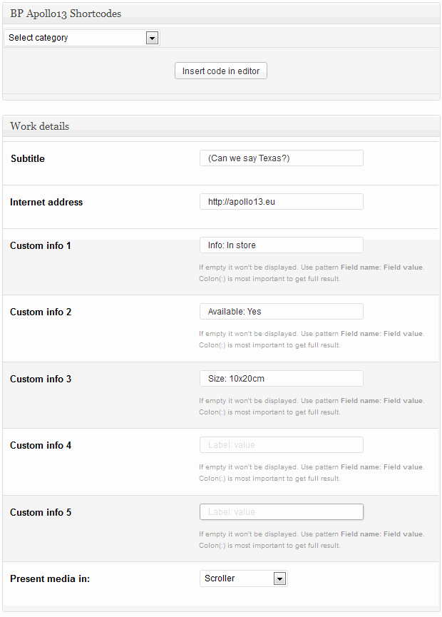
Subtitle - just additional title, describing more what is it about.
Internet address - You can provide link to your work.
Custom info 1-5 - Five custom fields for more details about work. If empty it won't be displayed. Use pattern Field name: Field value. Colon(:) is most important to get full result.
Present media in - you have 3 options to choose for: Scroller, Slider or Full width photos.
For Slider you have 4 more options:
Fit images - you can use auto(Fit always) or decide in which way images should be streched to fill screen. Fit when needed is best for small images, that shouldn't be streched to bigger sizes, only to smaller(to keep them visible).
Transition type - 3 types: Carousel, Fade and no transition.
Random slide order - self explanatory.
Autoplay - automatically changes items.
Next it is time to add some photos & videos to present our work. Lets check screen below:
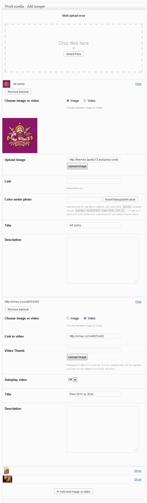
If your browser supports multi upload then you can use it to upload many images at once.
You can add title and description for each photo/video.
Color under photo - useful only in Slider.
You can also make photo to be custom link. If link option is filled, then this photo won't be visible in lightbox.
If you choose video type, you have to add link to video(youtube link, vimeo link, or link to mp4, ogv)
also you may add video,thumb it will be displayed instead of video placeholder in some cases. If you won't provide any then:
Viemo and Native video will use placeholder
Youtube will use defult youtube thumbnail
You can also choose to autoplay video.
In case of Slider and Full width photos images are loaded in full size(same as uploaded). Important thing here is to keep images in rational dimensions cause uploading here 10MB file could kill user transfer when viewing single work. And what would happen if you would have 20 images with 10MB each... :-)
Here is cite from our user about uploading too big photos, it is from our forum:
That is a real shame. For any other photographers that might read this post, there are two very important reasons to keep the images a reasonable size:
1) Loading time. The last thing you want when an agent or client is viewing your portfolio is for them to have to wait more than a split second for an image to load. With a 3MB image and even a reasonable connection speed these people will quickly move on and find another photographer for the job (especially if you have a number of images in your portfolio).
2) Discourage theft of your images. An 800px image will print at 300dpi on a 4x6 but no larger. This makes it more difficult for anyone to use your images without permission or payment. If you provide a 3MB image, you are asking for your work to be stolen. This happens ALL THE TIME.
JackieR0
Adding multiple Works list and Genres
You can create multiple works list if you wish. To do it, first you have to asign your works to different categories(genres). You can do it by choosing genres while adding work, like you can see on image below:
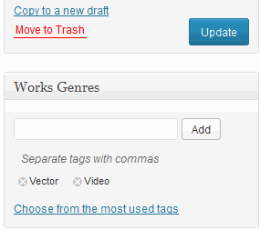
All your genres can be find in My Works menu under Genre
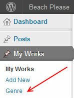
After you asigned different works to different genres you may want to add this Works list to menu. To do it go to Appearance->Menus and be sure to activate adding Works Genres to menu, just like you can see on image below
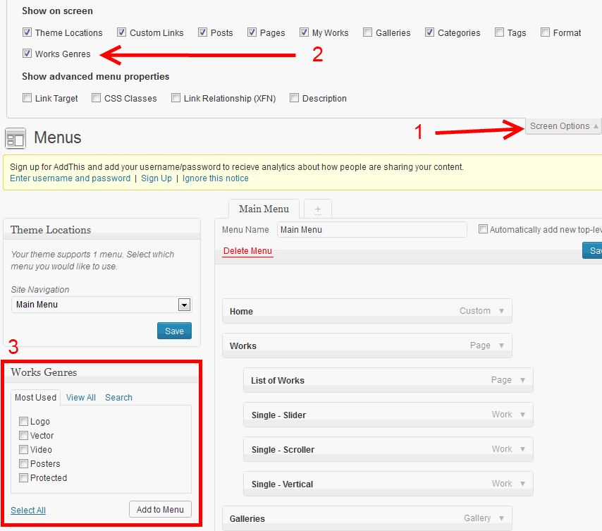
If you are using multiple Works list then template for Works list will display all your works with filter, so you can view them by genre.
Adding Galleries
For adding Galleries list please follow adding of Works list but while reading please CHANGE all words like "work", "Works" with "gallery", "galleries".
Here we will talk about second type. In each gallery you have few options to set:
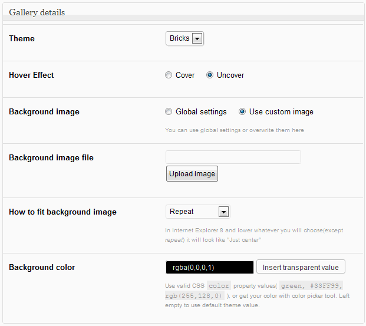
Theme - You have 2 types to select from:
Bricks with one additional option of type of hover effect
Slider with few more options:
Fit images - you can use auto(Fit always) or decide in which way images should be streched to fill screen. Fit when needed is best for small images, that shouldn't be streched to bigger sizes, only to smaller(to keep them visible).
Transition type - 3 types: Carousel, Fade and no transition.
Random slide order - self explanatory.
Autoplay - automatically changes items.
Background image - here you can decide to use oroverwrite global background.
Next we will have to add some items to our gallery, but it is exactly same process like in case of works, so please see this section.
Contact page
To add contact page simply create new page and from templates choose Contact. In this template, contact form will be displayed under page text(content typed in editor). Please also check out Contact page menu for more settings.
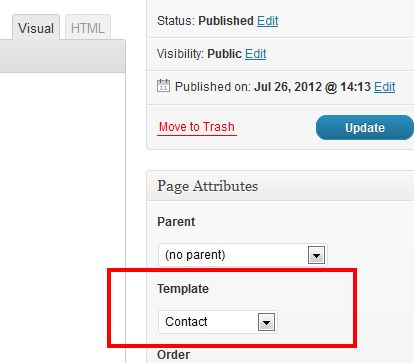
Translating theme
Theme comes translated in to few languages and it is prepared for translation, so it will just require some time for you to see our theme in your language(if it isn't translated to it yet). Important files you will find in theme directory in beach_apollo/languages/default.po
This file should be opened in program like Poedit and translated. After everything is done you have to save your translation with proper name. Names for each country can be found here (in parenthesis in titles). So for example for German - Deutsch you should save files as de_DE and get 2 files: de_DE.po and de_DE.mo.
Copy these files to beach_apollo/languages
At end you have to go to your WordPress installation root directory and find file wp-config.php.
There you have to find line that looks like:
define('WPLANG', 'en_EN');
and make sure that code there is your language.
After that if everything went fine, you will see theme in your language:-)
In every update, file default.po may change as we may add some new functions or fix some spelling, but you can use your old translation to get most of work done.
There is also file with translation in backend area in beach_apollo/languages/admin/default.po. You can edit it by following same process.
Here we post image where to type translated texts in Poedit, as not everyone get it right away.
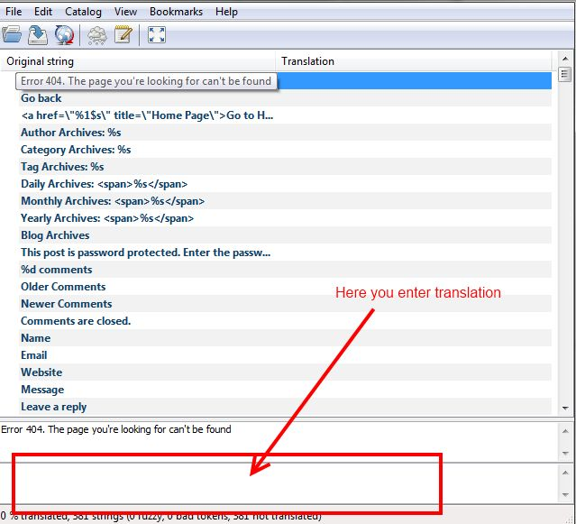
Modification of theme
Many of you may be tempted to edit theme files, but by doing so you block yourself from geting updates of theme, as you will loose your changes when you update theme. Fortunately there is solution - making child theme. Even WordPress team advice this as best solution:-)
In file downloaded form ThemeForest there is attached sampel child theme, so you can start changing theme even faster. To install it follow this steps:
Repeat step 1 but now install theme from beach_apollo_child.zip
Activate child theme.
Done.
Now you can overwrite styles, theme functions and even whole templates. Lets check some examples.
Changing CSS
If you want to change color and font size of content area you just have to edit style.css in child theme and add:
#content {
color: #000;
font-size: 20px;
}
Now you have black big text :-)
Good tool to detect what should you change and where is Firebug for firefox. Here is tutorial how to use it http://www.youtube.com/watch?v=oe1nqI4fNRc. Any browser has similar tool(under F12 key you can call it).
Custom CSS
For changes in css you can also special area in theme BP Apollo13 theme->Appearance->Custom CSS. There you can insert your custom css.
In this theme default stylesheet is loaded from main theme, and then you can overwrite CSS rules in style.css in child theme. After this come user.css with changes set in admin panel. So finally it loads in this order:
1. main theme style.css or compressed.css
2. child theme style.css
3. user.css(settings form admin panel)
4. Custom css(it is added at end of user.css)
Changing theme functions
This is not real example, and it wont work with this them. It is only here to demonstrate the idea.
Another example, you may wish to change info that is displayed under title of each post(date, author, categories, tags) so you have to define your own version of a13_post_info() function. Lets say you wish to remove tags from that list. Just open functions.php in child theme and drop this code:
You have now overwritten main theme function, and your version will be loaded.
Most interesting functions you will find in advance/utilities.php(in main theme) , but there is more functions that you can change in child theme. All functions that can be overwritten has before its definition code: if(!function_exists('function_name')). If you wish to change other functions ask on our forum for support in that case or just don't bother with child theme and change main theme(if you understand imlications;-) ).
600 x auto - page, post featured image(medium)
960 x auto - page, post featured image(big)
100 x 75 - thumbs in sidebar of works
auto x 500(can be chaged) - Work Scroller image
504 x 384(can be chaged) - Works Covers(Works list)
504 x 384(can be chaged) - Galleires Covers(Galleries list)
360 x 264(can be chaged) - Gallery bricks
Video/Audio support
Theme support Youtube and Vimeo videos, and also HTML 5 types.
For youtube best to use links as : http://www.youtube.com/watch?v=JByDbPn6A1o
For vimeo best to use links as: http://vimeo.com/12280336
Any other link will be treated as HTML 5 video. Browsers that understand the HTML5 tag will display MPEG/H.264 (.mp4) files, VP8/webm (.webm), or Ogg/Theora (.ogv) files. Other browsers can use Flash to play the .mp4 or .flv.
In pages and posts you can also post audio file. Detection is based on file extension. File will be treated as audio when has one of these extensions: .mp3, .ogg, .m4a
For blog and archives you can either use theme native pagination or enable this plugin and gain some more controll at it. You just need to install plugin and activate it. Also it would be good if you disable defult plugin stylesheet like shown on image below.
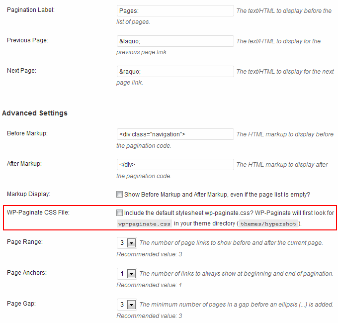
AddThis is social plugin that will provide support for social media in your blog and works. Install plugin, configure its options, and you are ready. We done already things that if should look nice with our theme.
Like button
We have prepared some styles for "Like" plugin so it looks nice with this theme. If you would like to use it install and activate this plugin http://wordpress.org/extend/plugins/i-recommend-this/
Here is recommended configuration of this plugin to work best with our theme:
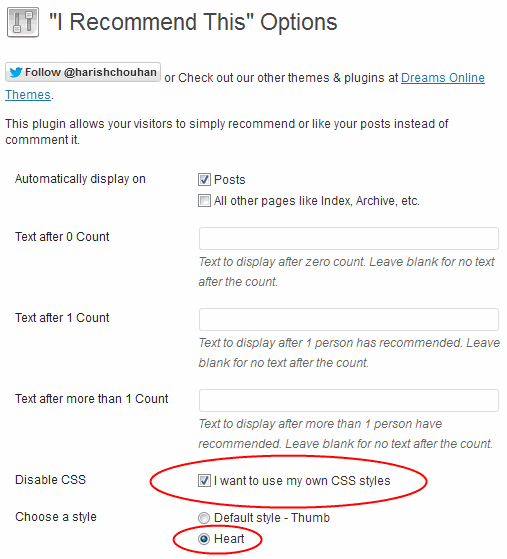
Captcha
Do you have problems with spam from our contact form or comments form? Install and activate this captcha plugin http://wordpress.org/extend/plugins/captcha/
Styles for it are prepared in theme:-)
Here is sample configuration:
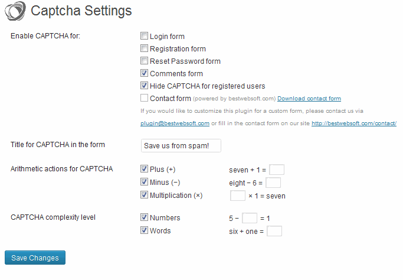
Rebuliding Thumbnails
If after changing some theme settings(conected to image sizes) images look weird, then you may have to regenarate thumbanails.
To do that you will have to use some plugin, we advice AJAX Thumbnail Rebuild. Just "Upload the plugin to your blog, activate it, done. You can then rebuild all thumbnails in the tools section (Tools -> Rebuild Thumbnails)." (copied from plugin page).
Flickr
To use Filckr widget styled as in our theme you will have to install plugin Quick Flickr Widget.
High DPI Screen users(Retina)
I bet 80% of you users use retina(or alike) display;-) That may be true in few years from now. To support such users you can use this great plugin http://wordpress.org/extend/plugins/wp-retina-2x/faq/ . It will serve better quality images for high DPI screens.
Sources and Credits
The scripts and plugins used is the project:
- jQuery (http://jquery.com)
- Modernizr (http://modernizr.com/)
- Masonry (http://masonry.desandro.com/)
- jQuery resize event (http://benalman.com/projects/jquery-resize-plugin/)
- VideoJS (http://videojs.com/)
- jPlayer by Mark J Panaghiston (http://www.jplayer.org)
- hoverIntent (http://cherne.net/brian/resources/jquery.hoverIntent.html)
- jQuery mouseWheel Brandon Aaron (http://brandonaaron.net)
- FitVids.js ( http://jquery.fitvids.min.js)
- Jackbox(extended license) (http://www.codingjack.com)
- Automatic Updates For Private And Commercial Themes (http://w-shadow.com/blog/2011/06/02/automatic-updates-for-commercial-themes/)
- HTML5 Boilerplate (http://html5boilerplate.com/)
- Font Awesome (http://fortawesome.github.io/Font-Awesome/)
and lots of internet wisdom out there. Thanks a lot everybody!
Once again, thank you so much for purchasing this theme. As we said at the beginning, we'd be glad to help you if you have any questions relating to this theme. No guarantees, but we'll do our best to assist.
{kind=link}
Social menu
Here you provide links to social profiles you have. Nothing new :-) You can also set icons set(circle/diamond white,black or color)
You can drag & drop social items to set them in order you wish to see on your page.
Only filled inputs will activate each social icon. Not filled = not shown :-)
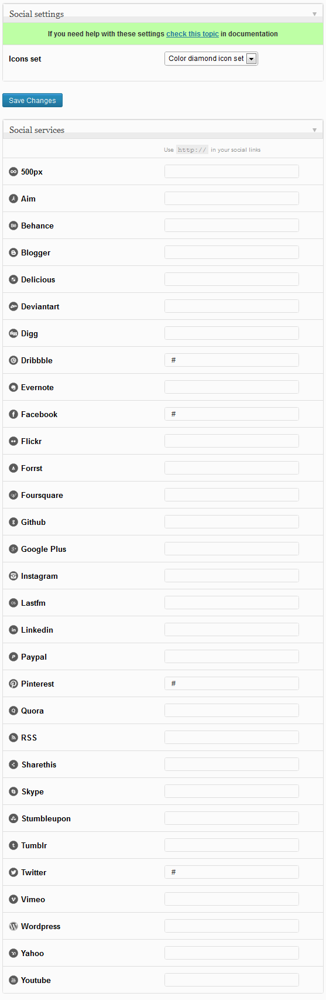